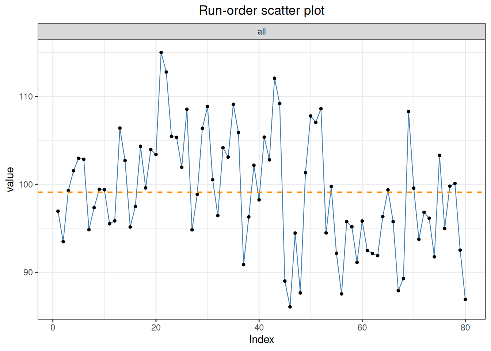
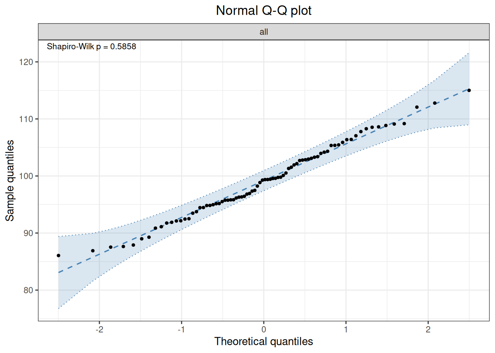

flowchart LR
A["Check day, site, run,<br/>and replicate design"] --> B["precision()<br/>Create VC object"]
B --> C["outlier() / normal()<br/>Diagnostics"]
C --> D["variance() / vc()<br/>VC, SD, CV"]
D --> E["ci()<br/>Component and total intervals"]
E --> F["profile()<br/>Concentration-related precision"]
F --> G["report()<br/>EP05/EP15 terminology"]
G --> H["Compare with prespecified limits"]
13 Precision Analysis
Precision evaluates agreement among results obtained from the same measurement system under repeatable conditions, usually expressed as SD or CV%. CLSI EP05 separates within-run, between-run, between-day, and related variance components and reports their estimates and confidence intervals for comparison with acceptance limits.
This chapter demonstrates how to use precision() to build a variance-component analysis, perform outlier and normality checks, estimate variance components and intervals, fit a Sadler precision profile, and rearrange results into EP05-style tables.
Code
library(ivdtools)
library(readr)13.1 Main Functions
| Function | Main purpose | Key input or output |
|---|---|---|
precision() |
Create a precision variance-component object | Nested formula, by, balance checks |
outlier() |
Detect outliers by sample | Grubbs or IQR |
normal() |
Test normality by sample | Shapiro–Wilk and related methods |
variance() / vc() |
Estimate variance components | VC, % total, SD, CV%, NegVC |
ci() |
Confidence intervals for components and total SD/CV | Satterthwaite approximation |
profile() |
Fit a Sadler precision profile | Ten candidate models, AIC selection |
report() |
Generate EP05-structured tables | Explicit day, run, and site mapping |
list_sadler() |
View the ten Sadler models | Model formulas and types |
summary() / plot() |
Summaries and figures | plot(type=...) |
After creating an object, analysis results accumulate through outlier(), normal(), variance(), ci(), and profile(). Reassign the object after every call. Only completed analyses appear in summary(), and some plots require a preceding analysis.
Code
precision(data, form, by = NULL)
variance(x, digits = 4, method = c("auto", "anova", "reml"), NegVC = FALSE)
ci(x, digits = 4)
profile(object, model.no = 1:10)
report(x, day, run = NULL, site = NULL,
table = c("simple", "detailed", "CI"), digits = 4)precision() ultimately calls VCA::anovaVCA() and requires an ordinary data.frame; convert readr::read_csv() tibbles before use and convert design factors such as day, lot, and replicate to factors.
For a two-level nested design,
\[ Y_{drk}=\mu+D_d+R_{r(d)}+\varepsilon_{drk}, \]
with independent random terms of mean zero,
\[ \sigma_T^2=\sigma_D^2+\sigma_{R(D)}^2+\sigma_e^2,\qquad SD_T=\sqrt{\sigma_T^2},\qquad CV_T=100\,SD_T/\bar Y. \]
The right side of form must represent the actual random hierarchy; the replicate layer is usually the residual error. by fits different samples or concentrations separately and does not combine them into one common variance. With method="auto", VCA::isBalanced() selects anovaVCA() for balanced data and remlVCA() otherwise; estimates and degrees of freedom can differ, so preserve the actual Method in reports.
variance() stores numeric values in results[[sample]]$vc, sd_comp, and cv_comp; formatted display tables are separate. Use the numeric components for later calculations. Run ci() after variance(); it uses VCA::VCAinference() for two-sided SD/CV intervals. profile() fits \(SD=f(\bar Y;\theta)\) across at least three valid levels and selects a Sadler/VFP candidate by AIC; extrapolation outside observed concentrations requires caution. report() maps components to EP05 terminology and can calculate within-laboratory and reproducibility intervals from component covariances and Satterthwaite degrees of freedom.
13.2 Analysis Examples
13.2.1 EP05 20×2×2 Single-Sample Precision
Twenty days, two runs per day, and two replicates per run produce 80 results:
Code
ep05 <- read_csv("./data/013-精密度分析/precision-ep05.csv", show_col_types = FALSE)
ep05 <- as.data.frame(ep05)
ep05$day <- factor(ep05$day)
ep05$run <- factor(ep05$run)
ep05$rep <- factor(ep05$rep)
head(ep05, 6) day run rep value
1 1 1 1 96.94
2 1 1 2 93.48
3 1 2 1 99.28
4 1 2 2 101.54
5 2 1 1 102.96
6 2 1 2 102.85Code
p <- precision(ep05, value ~ day/run)
p <- outlier(p, method = "grubbs")Outlier detection -- Grubbs (alpha = 0.05)
No outliers detected.Code
p <- normal(p, method = "shapiro")Normality test -- Shapiro-Wilk
Sample n Method Statistic p-value
---------------------------------------------------------------------------
all 80 Shapiro-Wilk W=0.9868 0.5858Code
p <- variance(p)Variance components
sample component VC %Total SD CV[%] Method
-----------------------------------------------------
all day 18.8358 42.6 4.3400 4.3788 anova
all day:run 17.4343 39.4 4.1754 4.2128 anova
all error 7.9482 18.0 2.8193 2.8445 anova Code
p <- ci(p)Confidence intervals (SD)
sample component estimate lower upper
----------------------------------------
all total 6.6497 5.4288 8.5842
all day 4.3400 0.0000 6.2255
all day:run 4.1754 2.0129 5.5513
all error 2.8193 2.3147 3.6073
Confidence intervals (%CV)
sample component estimate lower upper
----------------------------------------
all total 6.7091 5.4773 8.6609
all day 4.3788 0.0000 6.2812
all day:run 4.2128 2.0309 5.6009
all error 2.8445 2.3353 3.6395 Code
summary(p)
Precision analysis -- summary
----------------------------------------
Precision analysis object
Data class : data.frame
Total rows : 80
Formula : value ~ day/run
Samples : 1
Factor levels
day : 1 (4), 2 (4), 3 (4), 4 (4), 5 (4), 6 (4), 7 (4), 8 (4), 9 (4), 10 (4), 11 (4), 12 (4), 13 (4), 14 (4), 15 (4), 16 (4), 17 (4), 18 (4), 19 (4), 20 (4)
run : 1 (40), 2 (40)
rep : 1 (40), 2 (40)
Analysis status
[x] outlier
[x] normal
[x] variance
[x] ci
[ ] profile
Outlier detection -- Grubbs (alpha = 0.05)
No outliers detected.
Normality test -- Shapiro-Wilk
Sample n Method Statistic p-value
---------------------------------------------------------------------------
all 80 Shapiro-Wilk W=0.9868 0.5858
Variance components
sample component VC %Total SD CV[%] Method
-----------------------------------------------------
all day 18.8358 42.6 4.3400 4.3788 anova
all day:run 17.4343 39.4 4.1754 4.2128 anova
all error 7.9482 18.0 2.8193 2.8445 anova
Confidence intervals (SD)
sample component estimate lower upper
----------------------------------------
all total 6.6497 5.4288 8.5842
all day 4.3400 0.0000 6.2255
all day:run 4.1754 2.0129 5.5513
all error 2.8193 2.3147 3.6073
Confidence intervals (%CV)
sample component estimate lower upper
----------------------------------------
all total 6.7091 5.4773 8.6609
all day 4.3788 0.0000 6.2812
all day:run 4.2128 2.0309 5.6009
all error 2.8445 2.3353 3.6395 Code
plot(p, type = "dot")
Code
plot(p, type = "qq")
value ~ day/run means day, nested run within day, and replicate residual error. outlier() accepts "grubbs" or "iqr"; normal(method="auto") selects by sample size. NegVC is supplied to variance(), not to precision():
Code
p <- variance(p, NegVC = TRUE)13.2.2 Multiple Samples and a Sadler Profile
Code
profile_data <- as.data.frame(read_csv(
"./data/013-精密度分析/precision-profile.csv", show_col_types = FALSE
))
profile_data$sample <- factor(profile_data$sample)
profile_data$day <- factor(profile_data$day)
profile_data$rep <- factor(profile_data$rep)
p2 <- precision(profile_data, value ~ day, by = "sample")
p2 <- variance(p2)Variance components
sample component VC %Total SD CV[%] Method
-------------------------------------------------------
L1 day 0.6376 63.0 0.7985 3.9446 anova
L1 error 0.3750 37.0 0.6124 3.0250 anova
L2 day 5.7139 75.1 2.3904 4.7584 anova
L2 error 1.8937 24.9 1.3761 2.7393 anova
L3 day 3.3913 15.7 1.8415 1.8088 anova
L3 error 18.1466 84.3 4.2599 4.1840 anova
L4 day 30.5549 54.6 5.5276 2.7529 anova
L4 error 25.4525 45.4 5.0451 2.5126 anova
L5 day 0.0000 0.0 0.0000 0.0000 anova
L5 error 171.7986 100.0 13.1072 3.3003 anova Code
p2 <- ci(p2)Confidence intervals (SD)
sample component estimate lower upper
-----------------------------------------
L1 total 1.0063 0.6007 2.9368
L1 day 0.7985 0.0000 1.4267
L1 error 0.6124 0.4391 1.0108
L2 total 2.7582 1.5714 9.9889
L2 day 2.3904 0.0000 4.2023
L2 error 1.3761 0.9868 2.2716
L3 total 4.6409 3.2872 7.8819
L3 day 1.8415 0.0000 4.1779
L3 error 4.2599 3.0547 7.0319
L4 total 7.4838 4.6166 19.1652
L4 day 5.5276 0.0000 10.0268
L4 error 5.0451 3.6177 8.3280
L5 total 13.1072 9.5629 20.8255
L5 day 0.0000 NA NA
L5 error 13.1072 9.3990 21.6365
Confidence intervals (%CV)
sample component estimate lower upper
-----------------------------------------
L1 total 4.9710 2.9673 14.5079
L1 day 3.9446 0.0000 7.0480
L1 error 3.0250 2.1692 4.9936
L2 total 5.4905 3.1281 19.8843
L2 day 4.7584 0.0000 8.3652
L2 error 2.7393 1.9643 4.5219
L3 total 4.5583 3.2287 7.7416
L3 day 1.8088 0.0000 4.1035
L3 error 4.1840 3.0003 6.9067
L4 total 3.7271 2.2992 9.5447
L4 day 2.7529 0.0000 4.9936
L4 error 2.5126 1.8017 4.1476
L5 total 3.3003 2.4078 5.2436
L5 day 0.0000 NA NA
L5 error 3.3003 2.3666 5.4478 Code
plot(p2, type = "var")
Code
list_sadler()Sadler Precision Profile Models
1 Constant variance sigma^2 = beta1
2 Constant CV sigma^2 = beta1 * u^2
3 Mixed (const + prop var) sigma^2 = beta1 + beta2 * u^2
4 Constrained power (const exponent) sigma^2 = (beta1 + beta2 * u)^2
5 Alternative constrained power sigma^2 = beta1 + beta2 * u^K
6 Unconstrained power (with min) sigma^2 = beta1 + beta2 * u + beta3 * u^J
7 Alternative unconstrained power sigma^2 = beta1 + beta2 * u^J
8 Unconstrained power (Sadler default) sigma^2 = (beta1 + beta2 * u)^J
9 CLSI EP17-like sigma^2 = beta1 * u^J
10 CLSI EP17 exact (log-log) CV = beta1 * u^JCode
p2 <- profile(p2, model.no = 1:10)Precision profiles -- Sadler
total: sigma^2 = 0.0000 + 0.0086 * u^J (AIC = 56.45, R^2 = 0.9847)
day: sigma^2 = 0.0000 + 0.0095 * u^J (AIC = 43.46, R^2 = 0.8919)
error: sigma^2 = 0.0010 * u^2 (AIC = 55.96, R^2 = 0.9806)Code
plot(p2, type = "profile")
Each variance component needs at least three finite-SD concentrations for profile fitting. The profile can predict SD/CV at arbitrary concentrations for applications such as functional sensitivity, but predictions outside the observed range are extrapolations.
13.2.3 Multicenter Precision
Code
sites_data <- as.data.frame(read_csv(
"./data/013-精密度分析/precision-sites.csv", show_col_types = FALSE
))
p3 <- precision(sites_data, value ~ site/day/run, by = "sample")
p3 <- variance(p3)Variance components
sample component VC %Total SD CV[%] Method
--------------------------------------------------------
S1 site 0.2746 10.4 0.5241 1.0550 anova
S1 site:day 0.0000 0.0 0.0000 0.0000 anova
S1 site:day:run 0.3553 13.4 0.5960 1.1998 anova
S1 error 2.0231 76.3 1.4223 2.8632 anova
S2 site 0.7117 8.6 0.8436 0.8359 anova
S2 site:day 0.1018 1.2 0.3191 0.3162 anova
S2 site:day:run 0.9106 11.0 0.9543 0.9456 anova
S2 error 6.5670 79.2 2.5626 2.5392 anova
S3 site 22.0901 42.6 4.7000 2.3517 anova
S3 site:day 2.6252 5.1 1.6202 0.8107 anova
S3 site:day:run 0.0000 0.0 0.0000 0.0000 anova
S3 error 27.1915 52.4 5.2145 2.6091 anova Code
knitr::kable(report(p3, run = "run", day = "day", site = "site"))| Sample Description | Mean Value | Repeatability SD | %CV Repeatability | Reproducibility SD | %CV Reproducibility |
|---|---|---|---|---|---|
| S1 | 49.6766 | 1.4223 | 2.8632 | 1.6288 | 3.2788 |
| S2 | 100.9203 | 2.5626 | 2.5392 | 2.8794 | 2.8532 |
| S3 | 199.8592 | 5.2145 | 2.6091 | 7.2046 | 3.6049 |
To analyze each site separately, use multiple grouping columns while retaining all runs within each subset:
Code
p3s <- precision(sites_data, value ~ day/run, by = c("site", "sample"))
p3s <- variance(p3s)Variance components
sample component VC %Total SD CV[%] Method
-----------------------------------------------------
A.S1 day 0.0000 0.0 0.0000 0.0000 anova
A.S1 day:run 0.1646 6.8 0.4057 0.8231 anova
A.S1 error 2.2677 93.2 1.5059 3.0553 anova
B.S1 day 0.0000 0.0 0.0000 0.0000 anova
B.S1 day:run 0.5459 23.5 0.7389 1.4758 anova
B.S1 error 1.7784 76.5 1.3335 2.6637 anova
A.S2 day 0.3241 4.3 0.5693 0.5602 anova
A.S2 day:run 0.1523 2.0 0.3903 0.3840 anova
A.S2 error 7.0483 93.7 2.6549 2.6124 anova
B.S2 day 0.0000 0.0 0.0000 0.0000 anova
B.S2 day:run 1.6690 21.5 1.2919 1.2891 anova
B.S2 error 6.0856 78.5 2.4669 2.4616 anova
A.S3 day 4.4871 15.6 2.1183 1.0420 anova
A.S3 day:run 1.7006 5.9 1.3041 0.6415 anova
A.S3 error 22.5797 78.5 4.7518 2.3375 anova
B.S3 day 0.7633 2.3 0.8737 0.4448 anova
B.S3 day:run 0.0000 0.0 0.0000 0.0000 anova
B.S3 error 31.8033 97.7 5.6394 2.8709 anova Code
knitr::kable(report(p3s, run = "run", day = "day"))| Sample Description | Mean Value | Repeatability SD | %CV Repeatability | Within-Laboratory Precision SD | %CV Within-Laboratory Precision |
|---|---|---|---|---|---|
| A.S1 | 49.2884 | 1.5059 | 3.0553 | 1.5596 | 3.1642 |
| B.S1 | 50.0647 | 1.3335 | 2.6637 | 1.5246 | 3.0452 |
| A.S2 | 101.6249 | 2.6549 | 2.6124 | 2.7431 | 2.6993 |
| B.S2 | 100.2158 | 2.4669 | 2.4616 | 2.7847 | 2.7787 |
| A.S3 | 203.2864 | 4.7518 | 2.3375 | 5.3635 | 2.6384 |
| B.S3 | 196.4320 | 5.6394 | 2.8709 | 5.7067 | 2.9052 |
13.2.4 More Complex Nested Models
precision() can represent other VCA hierarchies, for example operator, day, and run:
Code
custom_data <- as.data.frame(read_csv(
"./data/013-精密度分析/precision-custom.csv", show_col_types = FALSE
))
p4 <- precision(custom_data, value ~ operator/day/run)
p4 <- variance(p4)Variance components
sample component VC %Total SD CV[%] Method
-----------------------------------------------------------
all operator 2.2914 11.8 1.5137 1.4898 anova
all operator:day 6.3159 32.4 2.5132 2.4734 anova
all operator:day:run 3.2463 16.7 1.8017 1.7733 anova
all error 7.6322 39.2 2.7627 2.7190 anova 13.2.5 Standard-Data Cross-Checks
The supplied EP05-A3 Appendix A and B files can be analyzed using the same pattern. Appendix A is a balanced day/run design; Appendix B is a multicenter site/day design with samples grouped by by = "sample":
Code
ep05_a <- as.data.frame(read_csv(
"./data/013-精密度分析/std-ep05-appendix-a-glucose.csv", show_col_types = FALSE
))
ep05_a$day <- factor(ep05_a$day)
ep05_a$run <- factor(ep05_a$run)
ep05_a_precision <- precision(ep05_a, result ~ day/run)
ep05_a_precision <- variance(ep05_a_precision, NegVC = FALSE)Variance components
sample component VC %Total SD CV[%] Method
----------------------------------------------------
all day 1.9586 15.1 1.3995 0.5731 anova
all day:run 3.0750 23.8 1.7536 0.7181 anova
all error 7.9000 61.1 2.8107 1.1510 anova Code
ep05_a_precision <- ci(ep05_a_precision)Confidence intervals (SD)
sample component estimate lower upper
----------------------------------------
all total 3.5963 3.0696 4.3430
all day 1.3995 0.0000 2.4622
all day:run 1.7536 0.0000 2.7858
all error 2.8107 2.3076 3.5963
Confidence intervals (%CV)
sample component estimate lower upper
----------------------------------------
all total 1.4727 1.2570 1.7785
all day 0.5731 0.0000 1.0083
all day:run 0.7181 0.0000 1.1408
all error 1.1510 0.9450 1.4727 Code
knitr::kable(report(ep05_a_precision, day = "day", run = "run", digits = 6))| Sample Description | Mean Value | Repeatability SD | %CV Repeatability | Within-Laboratory Precision SD | %CV Within-Laboratory Precision |
|---|---|---|---|---|---|
| all | 244.2 | 2.810694 | 1.15098 | 3.596325 | 1.472697 |
Code
ep05_b <- as.data.frame(read_csv(
"./data/013-精密度分析/std-ep05-appendix-b-ca19-9.csv", show_col_types = FALSE
))
ep05_b_precision <- precision(ep05_b, result ~ site/day, by = "sample")
ep05_b_precision <- variance(ep05_b_precision)Variance components
sample component VC %Total SD CV[%] Method
-------------------------------------------------------
P1 site 0.3843 35.4 0.6199 5.1312 anova
P1 site:day 0.1778 16.4 0.4216 3.4899 anova
P1 error 0.5248 48.3 0.7244 5.9963 anova
P2 site 1.6189 47.9 1.2724 3.0597 anova
P2 site:day 0.1232 3.6 0.3509 0.8439 anova
P2 error 1.6348 48.4 1.2786 3.0747 anova
P5 site 24.9068 29.3 4.9907 1.3165 anova
P5 site:day 3.1861 3.7 1.7850 0.4709 anova
P5 error 56.9669 67.0 7.5476 1.9910 anova
Q3 site 3.1742 60.4 1.7816 3.1959 anova
Q3 site:day 0.5232 10.0 0.7233 1.2975 anova
Q3 error 1.5599 29.7 1.2490 2.2404 anova
Q4 site 30.0735 75.7 5.4839 3.3104 anova
Q4 site:day 1.8663 4.7 1.3661 0.8247 anova
Q4 error 7.8128 19.7 2.7951 1.6873 anova
Q6 site 164.1097 68.1 12.8105 3.0922 anova
Q6 site:day 3.0208 1.3 1.7380 0.4195 anova
Q6 error 73.9590 30.7 8.5999 2.0758 anova Code
ep05_b_precision <- ci(ep05_b_precision)Confidence intervals (SD)
sample component estimate lower upper
-----------------------------------------
P1 total 1.0425 0.7415 1.7535
P1 site 0.6199 0.0000 1.1178
P1 site:day 0.4216 0.0000 0.6380
P1 error 0.7244 0.6148 0.8819
P2 total 1.8376 1.2313 3.5995
P2 site 1.2724 0.0000 2.2291
P2 site:day 0.3509 0.0000 0.7084
P2 error 1.2786 1.0852 1.5566
P5 total 9.2228 6.9060 13.8849
P5 site 4.9907 0.0000 8.9156
P5 site:day 1.7850 0.0000 3.9426
P5 error 7.5476 6.4058 9.1888
Q3 total 2.2929 1.4259 5.7003
Q3 site 1.7816 0.0000 3.1184
Q3 site:day 0.7233 0.0000 1.0958
Q3 error 1.2490 1.0600 1.5205
Q4 total 6.3050 3.6468 21.1983
Q4 site 5.4839 0.0000 9.5060
Q4 site:day 1.3661 0.0000 2.1602
Q4 error 2.7951 2.3723 3.4029
Q6 total 15.5271 9.3516 43.6651
Q6 site 12.8105 0.0000 22.1981
Q6 site:day 1.7380 0.0000 4.2690
Q6 error 8.5999 7.2989 10.4699
Confidence intervals (%CV)
sample component estimate lower upper
-----------------------------------------
P1 total 8.6292 6.1376 14.5139
P1 site 5.1312 0.0000 9.2524
P1 site:day 3.4899 0.0000 5.2812
P1 error 5.9963 5.0891 7.3001
P2 total 4.4191 2.9611 8.6559
P2 site 3.0597 0.0000 5.3606
P2 site:day 0.8439 0.0000 1.7036
P2 error 3.0747 2.6095 3.7433
P5 total 2.4329 1.8217 3.6627
P5 site 1.3165 0.0000 2.3518
P5 site:day 0.4709 0.0000 1.0400
P5 error 1.9910 1.6898 2.4239
Q3 total 4.1130 2.5578 10.2254
Q3 site 3.1959 0.0000 5.5938
Q3 site:day 1.2975 0.0000 1.9656
Q3 error 2.2404 1.9015 2.7276
Q4 total 3.8061 2.2014 12.7966
Q4 site 3.3104 0.0000 5.7384
Q4 site:day 0.8247 0.0000 1.3040
Q4 error 1.6873 1.4320 2.0542
Q6 total 3.7479 2.2573 10.5398
Q6 site 3.0922 0.0000 5.3581
Q6 site:day 0.4195 0.0000 1.0305
Q6 error 2.0758 1.7618 2.5272 Code
knitr::kable(report(ep05_b_precision, day = "day", site = "site", table = "detailed"))| Sample Description | Mean Value | N | Repeatability SD | %CV Repeatability | Between-Run SD | %CV Between-Run | Between-Day SD | %CV Between-Day | Between-Site SD | %CV Between-Site | Within-Laboratory Precision SD | %CV Within-Laboratory Precision | Reproducibility SD | %CV Reproducibility |
|---|---|---|---|---|---|---|---|---|---|---|---|---|---|---|
| P1 | 12.0813 | 75 | 0.7244 | 5.9963 | NA | NA | 0.4216 | 3.4899 | 0.6199 | 5.1312 | 0.8382 | 6.9379 | 1.0425 | 8.6292 |
| P2 | 41.5840 | 75 | 1.2786 | 3.0747 | NA | NA | 0.3509 | 0.8439 | 1.2724 | 3.0597 | 1.3259 | 3.1884 | 1.8376 | 4.4191 |
| P5 | 379.0907 | 75 | 7.5476 | 1.9910 | NA | NA | 1.7850 | 0.4709 | 4.9907 | 1.3165 | 7.7558 | 2.0459 | 9.2228 | 2.4329 |
| Q3 | 55.7467 | 75 | 1.2490 | 2.2404 | NA | NA | 0.7233 | 1.2975 | 1.7816 | 3.1959 | 1.4433 | 2.5890 | 2.2929 | 4.1130 |
| Q4 | 165.6560 | 75 | 2.7951 | 1.6873 | NA | NA | 1.3661 | 0.8247 | 5.4839 | 3.3104 | 3.1111 | 1.8781 | 6.3050 | 3.8061 |
| Q6 | 414.2867 | 75 | 8.5999 | 2.0758 | NA | NA | 1.7380 | 0.4195 | 12.8105 | 3.0922 | 8.7738 | 2.1178 | 15.5271 | 3.7479 |
Standard examples can still differ because of exclusion rules, displayed intermediate values, ANOVA versus REML, and the exact degrees-of-freedom convention. Disclose the path used rather than treating similar rounded values as identical algorithms.
13.3 Complete Standard Cases
13.3.1 CLSI EP05-A3 Appendix A: Glucose 20×2×2
Appendix A uses one patient-plasma pool measured in two runs per day on 20 days, with two replicates per run, for 80 glucose results. The data are complete and balanced; the nested structure is day/run, with replicate measurements forming the residual layer.
Code
ep05_a <- as.data.frame(read_csv(
"./data/013-精密度分析/std-ep05-appendix-a-glucose.csv",
show_col_types = FALSE
))
ep05_a$day <- factor(ep05_a$day)
ep05_a$run <- factor(ep05_a$run)
ep05_a$replicate <- factor(ep05_a$replicate)Code
ep05_a_precision <- precision(
ep05_a, form = result ~ day/run
)
ep05_a_precision <- variance(ep05_a_precision, NegVC = FALSE)Variance components
sample component VC %Total SD CV[%] Method
----------------------------------------------------
all day 1.9586 15.1 1.3995 0.5731 anova
all day:run 3.0750 23.8 1.7536 0.7181 anova
all error 7.9000 61.1 2.8107 1.1510 anova Code
ep05_a_precision <- ci(ep05_a_precision)Confidence intervals (SD)
sample component estimate lower upper
----------------------------------------
all total 3.5963 3.0696 4.3430
all day 1.3995 0.0000 2.4622
all day:run 1.7536 0.0000 2.7858
all error 2.8107 2.3076 3.5963
Confidence intervals (%CV)
sample component estimate lower upper
----------------------------------------
all total 1.4727 1.2570 1.7785
all day 0.5731 0.0000 1.0083
all day:run 0.7181 0.0000 1.1408
all error 1.1510 0.9450 1.4727 Code
knitr::kable(report(
ep05_a_precision,
day = "day", run = "run", digits = 6
))| Sample Description | Mean Value | Repeatability SD | %CV Repeatability | Within-Laboratory Precision SD | %CV Within-Laboratory Precision |
|---|---|---|---|---|---|
| all | 244.2 | 2.810694 | 1.15098 | 3.596325 | 1.472697 |
| Standard location | Statistic | Standard | ivdtools |
|---|---|---|---|
| EP05-A3 Appendix A | mean | 244.20 | 244.2000 |
| EP05-A3 Appendix A | SS_day | 415.80 | 415.8000 |
| EP05-A3 Appendix A | SS_run_day | 281.00 | 281.0000 |
| EP05-A3 Appendix A | SS_error | 316.00 | 316.0000 |
| EP05-A3 Appendix A | MS_day | 21.88 | 21.8842 |
| EP05-A3 Appendix A | MS_run_day | 14.05 | 14.0500 |
| EP05-A3 Appendix A | MS_error | 7.90 | 7.9000 |
| EP05-A3 Appendix A | V_day | 1.96 | 1.9586 |
| EP05-A3 Appendix A | V_run | 3.08 | 3.0750 |
| EP05-A3 Appendix A | V_error | 7.90 | 7.9000 |
| EP05-A3 Appendix A | SD_repeatability | 2.81 | 2.8107 |
| EP05-A3 Appendix A | SD_within_lab | 3.60 | 3.5963 |
| EP05-A3 Appendix A | CV_repeatability | 1.20 | 1.1510 |
| EP05-A3 Appendix A | CV_within_lab | 1.50 | 1.4727 |
13.3.2 CLSI EP05-A3 Appendix B: CA19-9 Multicenter Study
Appendix B contains three sites, six samples, five days per site, and five replicates per day, for 450 results. The sites use different instruments and operators but the same reagent and calibrator lots. The nested model is site/day, with replicate measurements as the residual layer.
Code
ep05_b <- as.data.frame(read_csv(
"./data/013-精密度分析/std-ep05-appendix-b-ca19-9.csv",
show_col_types = FALSE
))
ep05_b$sample <- factor(ep05_b$sample)
ep05_b$site <- factor(ep05_b$site)
ep05_b$day <- factor(ep05_b$day)
ep05_b$replicate <- factor(ep05_b$replicate)Code
ep05_b_precision <- precision(
ep05_b, form = result ~ site/day, by = "sample"
)
ep05_b_precision <- variance(ep05_b_precision)Variance components
sample component VC %Total SD CV[%] Method
-------------------------------------------------------
P1 site 0.3843 35.4 0.6199 5.1312 anova
P1 site:day 0.1778 16.4 0.4216 3.4899 anova
P1 error 0.5248 48.3 0.7244 5.9963 anova
P2 site 1.6189 47.9 1.2724 3.0597 anova
P2 site:day 0.1232 3.6 0.3509 0.8439 anova
P2 error 1.6348 48.4 1.2786 3.0747 anova
P5 site 24.9068 29.3 4.9907 1.3165 anova
P5 site:day 3.1861 3.7 1.7850 0.4709 anova
P5 error 56.9669 67.0 7.5476 1.9910 anova
Q3 site 3.1742 60.4 1.7816 3.1959 anova
Q3 site:day 0.5232 10.0 0.7233 1.2975 anova
Q3 error 1.5599 29.7 1.2490 2.2404 anova
Q4 site 30.0735 75.7 5.4839 3.3104 anova
Q4 site:day 1.8663 4.7 1.3661 0.8247 anova
Q4 error 7.8128 19.7 2.7951 1.6873 anova
Q6 site 164.1097 68.1 12.8105 3.0922 anova
Q6 site:day 3.0208 1.3 1.7380 0.4195 anova
Q6 error 73.9590 30.7 8.5999 2.0758 anova Code
ep05_b_precision <- ci(ep05_b_precision)Confidence intervals (SD)
sample component estimate lower upper
-----------------------------------------
P1 total 1.0425 0.7415 1.7535
P1 site 0.6199 0.0000 1.1178
P1 site:day 0.4216 0.0000 0.6380
P1 error 0.7244 0.6148 0.8819
P2 total 1.8376 1.2313 3.5995
P2 site 1.2724 0.0000 2.2291
P2 site:day 0.3509 0.0000 0.7084
P2 error 1.2786 1.0852 1.5566
P5 total 9.2228 6.9060 13.8849
P5 site 4.9907 0.0000 8.9156
P5 site:day 1.7850 0.0000 3.9426
P5 error 7.5476 6.4058 9.1888
Q3 total 2.2929 1.4259 5.7003
Q3 site 1.7816 0.0000 3.1184
Q3 site:day 0.7233 0.0000 1.0958
Q3 error 1.2490 1.0600 1.5205
Q4 total 6.3050 3.6468 21.1983
Q4 site 5.4839 0.0000 9.5060
Q4 site:day 1.3661 0.0000 2.1602
Q4 error 2.7951 2.3723 3.4029
Q6 total 15.5271 9.3516 43.6651
Q6 site 12.8105 0.0000 22.1981
Q6 site:day 1.7380 0.0000 4.2690
Q6 error 8.5999 7.2989 10.4699
Confidence intervals (%CV)
sample component estimate lower upper
-----------------------------------------
P1 total 8.6292 6.1376 14.5139
P1 site 5.1312 0.0000 9.2524
P1 site:day 3.4899 0.0000 5.2812
P1 error 5.9963 5.0891 7.3001
P2 total 4.4191 2.9611 8.6559
P2 site 3.0597 0.0000 5.3606
P2 site:day 0.8439 0.0000 1.7036
P2 error 3.0747 2.6095 3.7433
P5 total 2.4329 1.8217 3.6627
P5 site 1.3165 0.0000 2.3518
P5 site:day 0.4709 0.0000 1.0400
P5 error 1.9910 1.6898 2.4239
Q3 total 4.1130 2.5578 10.2254
Q3 site 3.1959 0.0000 5.5938
Q3 site:day 1.2975 0.0000 1.9656
Q3 error 2.2404 1.9015 2.7276
Q4 total 3.8061 2.2014 12.7966
Q4 site 3.3104 0.0000 5.7384
Q4 site:day 0.8247 0.0000 1.3040
Q4 error 1.6873 1.4320 2.0542
Q6 total 3.7479 2.2573 10.5398
Q6 site 3.0922 0.0000 5.3581
Q6 site:day 0.4195 0.0000 1.0305
Q6 error 2.0758 1.7618 2.5272 Code
ep05_b_report <- report(
ep05_b_precision,
day = "day", site = "site", table = "detailed", digits = 6
)
ep05_b_report_ci <- report(
ep05_b_precision,
day = "day", site = "site", table = "CI", digits = 6
)| Standard location | Statistic | Standard | ivdtools |
|---|---|---|---|
| EP05-A3 Appendix B | P1_mean | 12.100 | 12.0813 |
| EP05-A3 Appendix B | P1_SD_R | 0.724 | 0.7244 |
| EP05-A3 Appendix B | P1_SD_WL | 0.838 | 0.8382 |
| EP05-A3 Appendix B | P1_SD_REP | 1.040 | 1.0425 |
| EP05-A3 Appendix B | P1_CV_R | 6.000 | 5.9963 |
| EP05-A3 Appendix B | P1_CV_WL | 6.900 | 6.9379 |
| EP05-A3 Appendix B | P1_CV_REP | 8.600 | 8.6292 |
| EP05-A3 Appendix B | P2_mean | 41.600 | 41.5840 |
| EP05-A3 Appendix B | P2_SD_R | 1.280 | 1.2786 |
| EP05-A3 Appendix B | P2_SD_WL | 1.330 | 1.3259 |
| EP05-A3 Appendix B | P2_SD_REP | 1.840 | 1.8376 |
| EP05-A3 Appendix B | P2_CV_R | 3.100 | 3.0747 |
| EP05-A3 Appendix B | P2_CV_WL | 3.200 | 3.1884 |
| EP05-A3 Appendix B | P2_CV_REP | 4.400 | 4.4191 |
| EP05-A3 Appendix B | P5_mean | 379.000 | 379.0907 |
| EP05-A3 Appendix B | P5_SD_R | 7.550 | 7.5476 |
| EP05-A3 Appendix B | P5_SD_WL | 7.760 | 7.7558 |
| EP05-A3 Appendix B | P5_SD_REP | 9.220 | 9.2228 |
| EP05-A3 Appendix B | P5_CV_R | 2.000 | 1.9910 |
| EP05-A3 Appendix B | P5_CV_WL | 2.000 | 2.0459 |
| EP05-A3 Appendix B | P5_CV_REP | 2.400 | 2.4329 |
| EP05-A3 Appendix B | Q3_mean | 55.700 | 55.7467 |
| EP05-A3 Appendix B | Q3_SD_R | 1.250 | 1.2490 |
| EP05-A3 Appendix B | Q3_SD_WL | 1.440 | 1.4433 |
| EP05-A3 Appendix B | Q3_SD_REP | 2.290 | 2.2929 |
| EP05-A3 Appendix B | Q3_CV_R | 2.200 | 2.2404 |
| EP05-A3 Appendix B | Q3_CV_WL | 2.600 | 2.5890 |
| EP05-A3 Appendix B | Q3_CV_REP | 4.100 | 4.1130 |
| EP05-A3 Appendix B | Q4_mean | 166.000 | 165.6560 |
| EP05-A3 Appendix B | Q4_SD_R | 2.800 | 2.7951 |
| EP05-A3 Appendix B | Q4_SD_WL | 3.110 | 3.1111 |
| EP05-A3 Appendix B | Q4_SD_REP | 6.300 | 6.3050 |
| EP05-A3 Appendix B | Q4_CV_R | 1.700 | 1.6873 |
| EP05-A3 Appendix B | Q4_CV_WL | 1.900 | 1.8781 |
| EP05-A3 Appendix B | Q4_CV_REP | 3.800 | 3.8061 |
| EP05-A3 Appendix B | Q6_mean | 414.000 | 414.2867 |
| EP05-A3 Appendix B | Q6_SD_R | 8.600 | 8.5999 |
| EP05-A3 Appendix B | Q6_SD_WL | 8.770 | 8.7738 |
| EP05-A3 Appendix B | Q6_SD_REP | 15.500 | 15.5271 |
| EP05-A3 Appendix B | Q6_CV_R | 2.100 | 2.0758 |
| EP05-A3 Appendix B | Q6_CV_WL | 2.100 | 2.1178 |
| EP05-A3 Appendix B | Q6_CV_REP | 3.700 | 3.7479 |
13.3.3 CLSI EP15-A3: Ferritin 5×5 Verification
The complete EP15 case contains three serum ferritin levels, measured for five days with five replicates per day. Keep the raw data intact, then reproduce the standard case’s prespecified Grubbs exclusion of 30.2 µg/L from Level 1, Day 1, Replicate 3. This exclusion reproduces the standard case and is not selected retrospectively by the code.
Code
ep15_ferritin_raw <- as.data.frame(read_csv(
"./data/013-精密度分析/std-ep15-ferritin.csv", show_col_types = FALSE
))
ep15_ferritin_raw$sample <- factor(ep15_ferritin_raw$sample)
ep15_ferritin_raw$run <- factor(ep15_ferritin_raw$run)
ep15_ferritin_raw$replicate <- factor(ep15_ferritin_raw$replicate)
ep15_exclude <- with(
ep15_ferritin_raw,
sample == 1L & run == 1L & replicate == 3L
)
ep15_ferritin_raw[ep15_exclude, ] run replicate sample result
7 1 3 1 30.2Code
# Exclude the prespecified result.
ep15_ferritin <- ep15_ferritin_raw[!ep15_exclude, ]After exclusion, Level 1 has 24 results, with four replicates on Day 1; Levels 2 and 3 each retain 25 results. Split by sample and fit one result ~ run model for each level. run represents the between-run component, while daily replicates form the residual error component.
Code
# Separate levels to compare ANOVA and REML explicitly.
ep15_ferritin_list <- split(ep15_ferritin, ep15_ferritin$sample)
ep15_level_1 <- droplevels(ep15_ferritin_list[["1"]])
ep15_level_2 <- droplevels(ep15_ferritin_list[["2"]])
ep15_level_3 <- droplevels(ep15_ferritin_list[["3"]])
# Level 1
ep15_level_1_fit <- precision(ep15_level_1, result ~ run)
# The unbalanced design automatically switches to REML.
ep15_level_1_fit_r <- variance(
ep15_level_1_fit, NegVC = FALSE
)Variance components
sample component VC %Total SD CV[%] Method
----------------------------------------------------
all run 0.2820 27.5 0.5311 2.0816 reml
all error 0.7423 72.5 0.8616 3.3770 reml Code
# Use ANOVA explicitly to match the standard case.
ep15_level_1_fit <- variance(
ep15_level_1_fit, method = "anova", NegVC = FALSE
)Variance components
sample component VC %Total SD CV[%] Method
----------------------------------------------------
all run 0.2804 27.4 0.5295 2.0756 anova
all error 0.7414 72.6 0.8610 3.3749 anova Code
ep15_level_1_fit <- ci(ep15_level_1_fit, digits = 6)Confidence intervals (SD)
sample component estimate lower upper
--------------------------------------------
all total 1.010837 0.752556 1.539604
all run 0.529550 0.000000 0.944544
all error 0.861028 0.654803 1.257592
Confidence intervals (%CV)
sample component estimate lower upper
--------------------------------------------
all total 3.962125 2.949754 6.034706
all run 2.075649 0.000000 3.702279
all error 3.374924 2.566597 4.929319 Code
# Level 2
ep15_level_2_fit <- precision(ep15_level_2, result ~ run)
ep15_level_2_fit <- variance(
ep15_level_2_fit, method = "anova", NegVC = FALSE
)Variance components
sample component VC %Total SD CV[%] Method
----------------------------------------------------
all run 2.5400 44.6 1.5937 1.1374 anova
all error 3.1600 55.4 1.7776 1.2687 anova Code
ep15_level_2_fit <- ci(ep15_level_2_fit, digits = 6)Confidence intervals (SD)
sample component estimate lower upper
--------------------------------------------
all total 2.387467 1.701094 3.999257
all run 1.593738 0.000000 2.636950
all error 1.777639 1.359999 2.567034
Confidence intervals (%CV)
sample component estimate lower upper
--------------------------------------------
all total 1.703873 1.214026 2.854166
all run 1.137409 0.000000 1.881922
all error 1.268655 0.970596 1.832025 Code
# Level 3
ep15_level_3_fit <- precision(ep15_level_3, result ~ run)
ep15_level_3_fit <- variance(
ep15_level_3_fit, method = "anova", NegVC = FALSE
)Variance components
sample component VC %Total SD CV[%] Method
-------------------------------------------------------
all run 102.6080 47.5 10.1296 1.6262 anova
all error 113.5200 52.5 10.6546 1.7105 anova Code
ep15_level_3_fit <- ci(ep15_level_3_fit, digits = 6)Confidence intervals (SD)
sample component estimate lower upper
-----------------------------------------------
all total 14.701292 10.382650 25.141336
all run 10.129561 0.000000 16.638736
all error 10.654576 8.151381 15.385949
Confidence intervals (%CV)
sample component estimate lower upper
--------------------------------------------
all total 2.360213 1.666878 4.036305
all run 1.626246 0.000000 2.671259
all error 1.710534 1.308660 2.470130 Extract the total mean, run variance component, repeatability SD, and total within-laboratory SD from each object and compare them with the displayed standard values:
| Sample | Statistic | Standard | ivdtools |
|---|---|---|---|
| Level 1 | overall mean | 25.5000 | 25.5125 |
| Level 1 | between-run variance | 0.2805 | 0.2804 |
| Level 1 | repeatability SD | 0.8600 | 0.8610 |
| Level 1 | within-laboratory SD | 1.0100 | 1.0108 |
| Level 2 | overall mean | 140.1000 | 140.1200 |
| Level 2 | between-run variance | 2.5400 | 2.5400 |
| Level 2 | repeatability SD | 1.7800 | 1.7776 |
| Level 2 | within-laboratory SD | 2.4000 | 2.3875 |
| Level 3 | overall mean | 623.0000 | 622.8800 |
| Level 3 | between-run variance | 102.6100 | 102.6080 |
| Level 3 | repeatability SD | 10.7000 | 10.6546 |
| Level 3 | within-laboratory SD | 14.7000 | 14.7013 |
The recalculated results for all three levels agree with or are close to the displayed standard values. Level 1 is unbalanced after exclusion, so small differences in variance components arise from unbalanced-data calculation details and intermediate rounding. For Level 2, the exact within-laboratory SD is 2.3875 µg/L, while the standard displays 2.40 µg/L after rounding its variance components. The standard case passes all three levels under its stated PI and UVL criteria; that conclusion applies only to the stated claims and limits.
13.3.4 WS/T 408–2024: Precision Verification
WS/T 408 Appendix A.2 uses two HDL-C levels, five batches per level, and three replicates per batch. After import, verify that each sample and batch contains three results.
Code
wst408_precision <- as.data.frame(read_csv(
"./data/013-精密度分析/std-wst408-precision.csv",
show_col_types = FALSE
))
wst408_precision$sample <- factor(wst408_precision$sample)
wst408_precision$batch <- factor(wst408_precision$batch)
wst408_precision$replicate <- factor(wst408_precision$replicate)Code
wst408_precision_fit <- precision(
wst408_precision,
result ~ batch,
by = "sample"
)
wst408_precision_fit <- variance(
wst408_precision_fit,
method = "anova",
NegVC = FALSE
)Variance components
sample component VC %Total SD CV[%] Method
----------------------------------------------------
样品1 batch 0.0001 10.9 0.0080 0.7637 anova
样品1 error 0.0005 89.1 0.0228 2.1884 anova
样品2 batch 0.0001 12.1 0.0091 0.5892 anova
样品2 error 0.0006 87.9 0.0246 1.5898 anova Code
wst408_precision_fit <- ci(wst408_precision_fit, digits = 6)Confidence intervals (SD)
sample component estimate lower upper
--------------------------------------------
样品1 total 0.024152 0.017523 0.038843
样品1 batch 0.007958 0.000000 0.020611
样品1 error 0.022804 0.015933 0.040019
样品2 total 0.026268 0.019035 0.042360
样品2 batch 0.009129 0.000000 0.022737
样品2 error 0.024631 0.017210 0.043225
Confidence intervals (%CV)
sample component estimate lower upper
--------------------------------------------
样品1 total 2.317879 1.681694 3.727688
样品1 batch 0.763745 0.000000 1.978014
样品1 error 2.188437 1.529098 3.840561
样品2 total 1.695429 1.228567 2.734049
样品2 batch 0.589202 0.000000 1.467529
样品2 error 1.589755 1.110789 2.789914 | Sample | Statistic | Standard | ivdtools |
|---|---|---|---|
| Level 1 | overall mean | 1.0420 | 1.0420 |
| Level 1 | s_WR | 0.0228 | 0.0228 |
| Level 1 | s_WL | 0.0242 | 0.0242 |
| Level 1 | CV_WL (%) | NA | 2.3179 |
| Level 2 | overall mean | 1.5493 | 1.5493 |
| Level 2 | s_WR | 0.0246 | 0.0246 |
| Level 2 | s_WL | 0.0263 | 0.0263 |
| Level 2 | CV_WL (%) | NA | 1.6954 |
13.3.5 YY/T 1789.1–2021 Appendix A: 25-Hydroxyvitamin D
Appendix A provides complete 20-day × 2-run × 2-replicate data, for 80 results.
Code
yyt1789_1 <- read.csv(
"./data/013-精密度分析/std-yyt1789-1-appendix-a.csv"
)
yyt1789_1$day <- factor(yyt1789_1$day)
yyt1789_1$run <- factor(yyt1789_1$run)
yyt1789_1_fit <- precision(yyt1789_1, result ~ day/run)
yyt1789_1_fit <- variance(
yyt1789_1_fit, method = "anova"
)Variance components
sample component VC %Total SD CV[%] Method
----------------------------------------------------
all day 0.1769 36.2 0.4206 2.4324 anova
all day:run 0.0648 13.2 0.2545 1.4721 anova
all error 0.2475 50.6 0.4975 2.8773 anova Code
yyt1789_1_fit <- ci(yyt1789_1_fit)Confidence intervals (SD)
sample component estimate lower upper
----------------------------------------
all total 0.6994 0.5861 0.8674
all day 0.4206 0.0000 0.5991
all day:run 0.2545 0.0000 0.4400
all error 0.4975 0.4084 0.6365
Confidence intervals (%CV)
sample component estimate lower upper
----------------------------------------
all total 4.0450 3.3897 5.0170
all day 2.4324 0.0000 3.4650
all day:run 1.4721 0.0000 2.5448
all error 2.8773 2.3623 3.6815 | Standard location | Statistic | Standard | ivdtools |
|---|---|---|---|
| YY/T 1789.1 Appendix A | mean | 17.290 | 17.2898 |
| YY/T 1789.1 Appendix A | repeatability SD | 0.497 | 0.4975 |
| YY/T 1789.1 Appendix A | within-laboratory SD | 0.699 | 0.6994 |
| YY/T 1789.1 Appendix A | repeatability CV (%) | 2.900 | 2.8773 |
| YY/T 1789.1 Appendix A | within-laboratory CV (%) | 4.000 | 4.0450 |
| YY/T 1789.1 Appendix A | repeatability CI lower | 0.408 | 0.4084 |
| YY/T 1789.1 Appendix A | repeatability CI upper | 0.637 | 0.6365 |
| YY/T 1789.1 Appendix A | within-laboratory CI lower | 0.586 | 0.5861 |
| YY/T 1789.1 Appendix A | within-laboratory CI upper | 0.867 | 0.8674 |